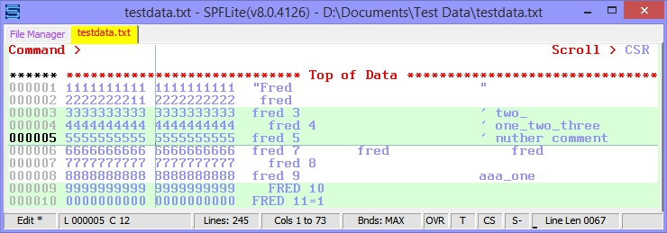

Options - Screen
Index of Screen Options
Vertical Cursor in Insert Mode
% Height Normal Cursor and Insert Cursor
Font Name, Font Pitch and Choose
Screen Colors - Click button to change
Indicating file-modified status in the tab header

SPFLite uses the standard Windows cursor support. To control the Blink rate (or turn it right off) go to the system's Control Panel => Keyboard settings panel. Note that changing this setting affects the cursor blink rate for your entire system, not just SPFLite.
Vertical Cursor in Insert Mode
If checked, then a vertical bar cursor will be used when the keyboard is in Insert Mode rather than a square cursor (which can be adjusted by the next two items in this dialog). If this option is checked, the value chosen for % Height Normal Cursor and Insert Cursor will be ignored when in Insert mode.
% Height Normal Cursor and Insert Cursor
These two values control the appearance of the screen cursor in Normal and Insert mode. The value given is a % of a full height Blob cursor (i.e. one which fills the character space). The value can range from 20 to 100%. Note: depending on the screen font you choose, values below 20% tend to be either invisible, or fragmented dots. So, if you have an underscore-like cursor and find that your cursor disappeared, you may need to adjust these settings. Note the setting for the Insert cursor is ignored if you have chosen to use a Vertical cursor in insert mode (above)
Font Name, Font Pitch and Choose
These three related items allow you to choose what screen font will be used for the display. You can either directly specify a specific name and pitch (e.g. TERMINAL / 11) or select the Choose button to invoke a standard Windows Font Selection Dialog. Note that only fixed-width (non-proportional) fonts are supported.

SPFLite provides a number of fixed fonts to use, if you need something besides the system-provided fonts.
You will notice many examples in this Help document use the RASTER font, available as an SPFLite download. There are three Raster fonts available. Raster is 15 points high. Raster14 is 14 points high, and allows a few more lines on a screen. RasterTTF is the Raster font converted to TrueType format. RasterTTF has the same character set as Raster, but is intended primarily for printing files. RasterTTF has the advantage of being scalable, while Raster and Raster14 are crisper fonts for the screen. Later versions of SPFLite have added yet smaller versions of Raster, namely Raster13, Raster12 and Raster11. Check the SPFLite download page for the most current down-loadable fonts.
This color select box is used to choose the color to be used for column markers. Column markers are faint vertical lines visible on the screen at specified columns to provide column alignment 'clues'. They are specified by the MARK line command.. See that command for more info. Simply click on this box to go to the color selection dialog to make your choice.
Vertical Cursor Ruler?
A hardware option on the original 3270 terminals, and some 3270 emulators, provides 'cross-hair' cursors. These are visible full height/width lines which followed the cursor location making the position very easy to track. It's a personal option; some users love them and other find them distracting. SPFLite supports this style and allows you to optionally select either or both of the vertical and horizontal lines. The lines are drawn in the MARK line color, which is set in the left-hand column. A sample of cursor rulers is shown below.

If selected, SPFLite will use alternating bands (3 lines each) of background colors when displaying the screen. This is similar to the use of 'green banded' paper for printouts in the past. It assists in maintaining eye positioning when scanning text lines. If you activate this option, the choice of the alternate color is made in the Screen Colors section below. A sample of a screen with alternating background colors is shown below.
NOTE: Hercules users are familiar with the Hercules Remote Print Spooler utility program HercPrt, which (among other things) has the ability to take a SYSOUT file and format it into a PDF file that looks remarkably like a computer printout on "green bar" paper - complete with sprocket holes and perforation! This is cute and very clever, but these PDF files use a large amount of disk space. By using alternating background colors (along with EOL AUTO and PAGE ON mode), it is possible to very closely simulate the effect of a HercPrt-formatted file without the PDF disk-space overhead. You will still be editing or browsing ordinary text files in native mode, but the display will have the look and feel of paging through an actual hard copy printout.
If you wish to match the same colors generated by the HercPrt utility, make the main background color (BG1) white, and the alternative background (BG2) color a light green.

With the large number of keywords supported by some commands, it sometimes becomes difficult to remember them all and the need to sometimes enclose them in quotes to use as literals. This can cause some confusing error messages to appear. If this item is selected, then recognized keywords on the command line will be displayed in high-intensity, non-keywords in lo-intensity. For example"

The keywords 'change', 'prefix', and 'all' are hi-lighted, the remaining operands are left in lo-intensity.
You can choose to have a summary of the local commands keys displayed at the bottom of the screen. You can choose from 0 to 5 lines for the display, where 0 means to omit the display altogether. Only keys which have been defined with a Key Label will be displayed. See "Keyboard Customization" for how to set up Key Labels. The keys are displayed in logical key order rather than strictly by their alphabetic sorting.
e.g. the keys S-F1, F1, F10, A-F10, F2 and S-F2 would be displayed in order F1, S-F1, F2, S-F2, F10, A-F10.
In contrast to ISPF, which has a fixed Edit sequence number width of 6, you can make the size of this area longer to accommodate files with large numbers of lines, or shorter to allow more text data to be visible when working on displays with screen-size constraints.. You may set a value here from 5 to 8 characters.
If you change the width of this field while you have files open that are displaying "special" lines, like Profile values, MARK, MASK, BOUNDS, etc. some of these special lines "markers" may not be displayed correctly. To correct this, issue a RESET command and redisplay the lines in question. Typically, you will set this value to what you prefer, and then seldom if ever change it again.
Note: Some sequence area "markers" will not fit with their normal appearance when the width is set to 5. When this happens, SPFLite will shorten the marker to display it as best it can. For example, =PROF> becomes PROF>. For most markers, it will be obvious what is meant. For NOTE and xNOTE lines, the markers had to be reformatted. In 5-column mode, these will now appear as =##=> and =X#=> respectively.
Note: The width of the File Manager's line command area (set in File Manager Options) and the width of the Edit screen's line command area (set in Screen Options) are different settings. Also, the File Manager's line command area will scroll horizontally, while the Edit screen's line command area does not scroll.
Note: A few of our more ambitious users have attempted to edit very large files, approaching and in a few cases exceeding one million lines. You are certainly welcome to try this. However, editing files that large is what most people use databases for, not text editors - and such usage pushes the limits of what SPFLite is capable of doing. If you intend to do that, and you are reading this section here because you want larger sequence numbers to accommodate your file, we have a few recommendations that may be of benefit:
- Be certain you have a current backup of your file before opening it with SPFLite.
- Editing extremely large files means that virtual storage will be a constraint. While your edit is in progress, you should close all other Windows programs that are not absolutely necessary.
- Limit the number of edit sessions within SPFLite that are running at the same time you are editing the large file, preferably having the large file open as the only edit session.
- Be sure to close your edit session before exiting SPFLite, or else be sure the General Options check-box that says "Reopen last files" is left unchecked. Otherwise, the next time you start SPFLite (perhaps for some other purpose) it will reopen your large file, which may be quite time-consuming.
- Editing extremely large files will have a noticeable performance impact. Some operations will take longer than you might expect. Be prepared to be patient. You may also see the "loop detected" message because of the time required to complete some operations. In most cases, you can simply click OK to proceed.
Screen Colors - Click button to change
The bottom of this tab is used to select the colors you wish to use for the screen display. These colors are used for displaying the non-data portions of the screen, the color settings for the data itself are specified on the Options -> Schemes tab.
Each of the 10 entries has an FG, BG1 and BG2 color selection. The FG specifies the color of the foreground text itself, the BG1 and BG2 specify the background color(s) Only BG1 is used if Banding is Off, both BG1 and BG2 are used if banding is On.
Note: Some of these entries may never actually use the BG2 entry. When color selections are made, the name of each entry will be displayed in your selected colors so that you receive immediate feedback on what your choices will look like.
To alter a color, click the displayed color box and you will be shown the standard system color chooser dialog.
Custom Colors
Note: When you create custom colors using the color chooser, SPFLite will "remember" these custom colors for your future use. This means you can create and save 16 custom colors.

Indicating file-modified status in the tab header
Here is an example of how these color choices would appear in the main edit window. The current file tab shows red lettering because MODIFIED.TXT is modified, while SAVED.TXT is in blue lettering because it is unmodified.

Created with the Personal Edition of HelpNDoc: Easily create EBooks